Правила користування світлофором
Сигнали світлофору
-
Забороняє починати проїзд/прохід перехрестя. Миготливий сигнал даного кольору має те ж значення.
Одночасне загоряння червоного і жовтого говорить водіям автомобілів, пішоходам та іншим учасникам руху про заборону проїзду/проходу, а також про те, що незабаром включиться зелений.

Рух дозволено. Однак попереджає про небезпеку на перехресті. Також може інформувати учасників руху про те, що світлофор не працює. Якщо є регулювальник на перехресті, то проїзд здійснюється за його вказівками.
-
Світлофор повідомляє про те, що рух заборонено і інформує про швидку зміну кольору.
-
Дозволяє рухатися.

Не дає заборони для пересування. Інформує про те, що скоро включиться забороняє.
На деяких світлофорах для більш точного інформування встановлюється цифрове табло.
Світлофор з додатковою секцією на перехресті
На перехресті, де рух регулюється світлофором з додатковою секцією, водій, який перебуває на смузі, з якої робиться поворот, повинен продовжувати рух у напрямку, що вказує стрілка, ввімкнута в додатковій секції, якщо його зупинка на заборонний сигнал світлофора створить перешкоди транспортним засобам, що рухаються за ним по тій самій смузі.
-
Cвітлофор з контурною правою стрілкою
Під’їжджаємо до перехрестя, яке регулює світлофор, з контурною правою стрілкою. Вам потрібно повернути праворуч, і ви бачите, що горить зелена стрілка. У той же час основний сигнал світлофора червоний. Пам’ятаємо, водій має дати дорогу транспортним засобам, що рухаються з інших напрямків.
Якщо ви побачили зелену стрілку, відразу ж проїхали на червоний сигнал, ви порушили правила. Справа в тому, що стрілка вказує можливий напрямок руху, але черговість проїзду визначає основний сигнал світлофора.
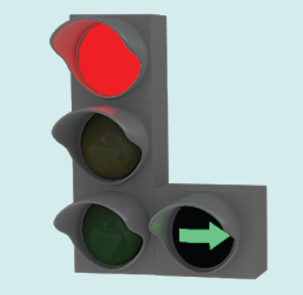Це означає, що право першочергового проїзду має той водій, у якого і основний, і додатковий сигнал зелені. Водій же, у якого горить червоне світло, зобовязаний дати дорогу транспортним засобам і пішоходам, що рухаються з інших напрямків після чого завершити маневр повороту
-
Cвітлофор з правою стрілкою на табличці на рівні червоного сигналу
Під час руху в напрямку стрілки зеленого кольору на таблиці, встановленій на рівні червоного сигналу світлофора із вертикальним розташуванням сигналів, водій повинен зайняти крайню праву (ліву) смугу руху та дати дорогу транспортним засобам і пішоходам, що рухаються з інших напрямків.
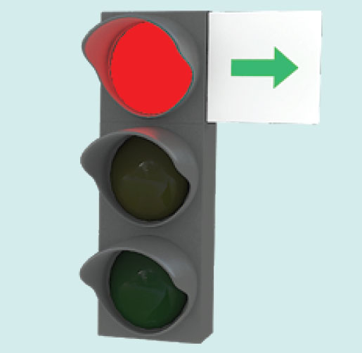На перехресті, де рух регулюється світлофором з додатковою секцією, водій, який перебуває на смузі, з якої робиться поворот, повинен продовжувати рух у напрямку, що вказує стрілка, ввімкнута в додатковій секції, якщо його зупинка на заборонний сигнал світлофора створить перешкоди транспортним засобам, що рухаються за ним по тій самій смузі
Сигнали регулювальника
Сигнали регулювальника мають перевагу щодо сигналів світлофорів та дорожніх знаків. Тому, у даному випадку, водії повинні керуватись лише сигналами регулювальника.
Сигналами регулювальника є положення його корпуса, а також жести руками, в тому числі з жезлом або диском з червоним світлоповертачем, які мають такі значення:
-
Положення 1
Регулювальник дорожнього руху стоїть обличчям до вас. Руки його опущені донизу. Іноді буває, що в нього руки розведені по сторонах, чи може бути зігнута перед грудьми права рука жезлом вліво:

Рух заборонено в усі сторони. Це положення регулювальника означає червоний сигнал світлофора.
-
Положення 2
Регулювальник знову стоїть обличчям до вас, але його права рука, що тримає жезл, витягнута вперед, тобто до вас:
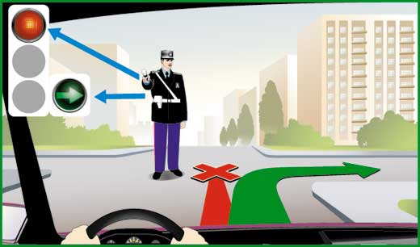Рух заборонено прямо, а праворуч – рух дозволено. Це положення регулювальника означає червоний сигнал світлофора із зеленою стрілкою праворуч, з тією лише різницею, що в даному випадку вам не треба поступатися дорогою машинам, що їдуть зліва і пішоходам.
-
Положення 3
Рука регулювальника з жезлом піднята вгору. При цьому він стоїть до вас будь-яким боком:
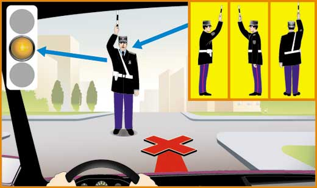Цей жест означає, що зараз зміниться основне положення на перехресті. Таке положення означає «Увага!» і жовтий сигнал світлофора.
-
Положення 4
Регулювальник руху стоїть правим боком до вашої машини з витягнутою вперед рукою з жезлом:
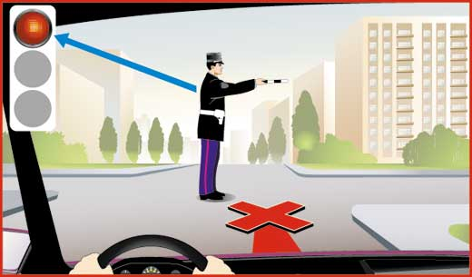Рух на всі боки заборонено. Такий сигнал, як і в положенні 1, означає червоне світло світлофора.
-
Положення 5 і 6:
Регулювальник дорожнього руху стоїть спиною до вас. Руки його можуть перебувати в різних позиціях:
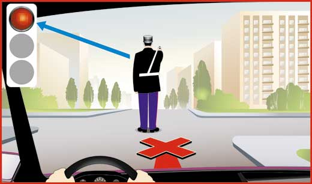 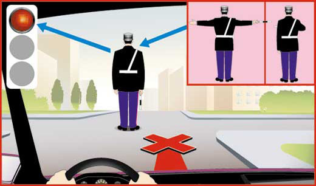Положення 5 і 6 Рух в усі сторони забороняється, що б він не показував жезлом і руками. Цей жест також означає червоне світло світлофора.
-
Положення 7
Регулювальник руху стоїть лівим боком до вашої машини, а його руки опущені донизу, витягнуті по сторонах або зігнуті і притиснуті до грудей:
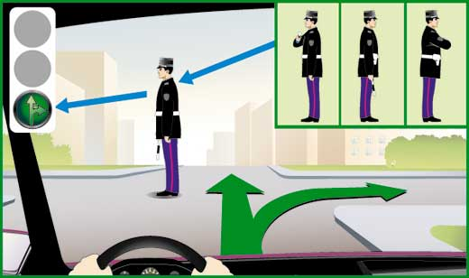Ці жести показують, що можна їхати прямо або праворуч, спочатку пропустивши пішоходів. Такий сигнал означає зелене світло світлофора, але із забороною лівого повороту.
-
Положення 8
Регулювальник стоїть до вас лівим боком з витягнутою вперед рукою з жезлом:
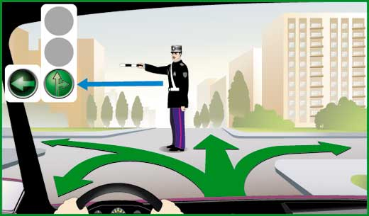Дозволяється їхати у будь-якому напрямку: праворуч, ліворуч, прямо, а також розвертатися. Цей сигнал регулювальника означає зелене світло світлофора.
Порушення ПДР
-
Проїзд на червоне світло
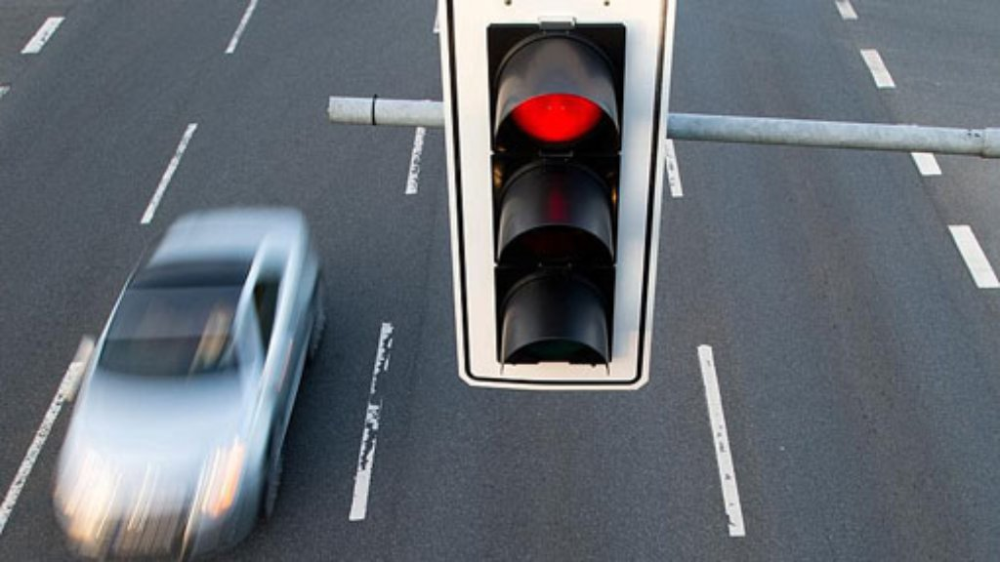Стаття 122, частина 2 — штраф 510 грн;
Стаття 122, частина 5 — у разі виникнення аварійної ситуації штраф 1445 грн або позбавлення права керування транспортними засобами на 6—12 місяців.
-
Перехід на червоне світло
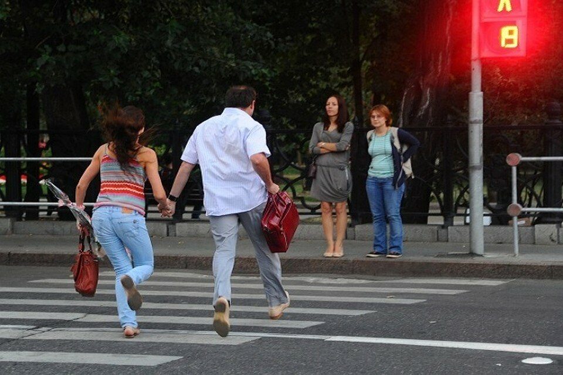Стаття 127 КпАП — за перехід дороги на червоне світло або перехід в недозволеному місці пішоходи можуть відбутися попередженням з боку поліції або штрафом 255 грн.